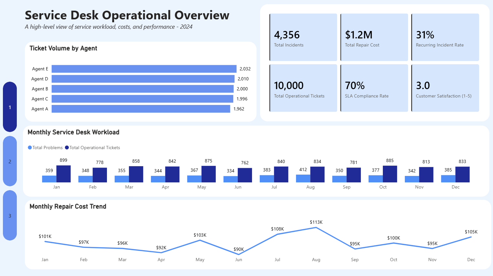
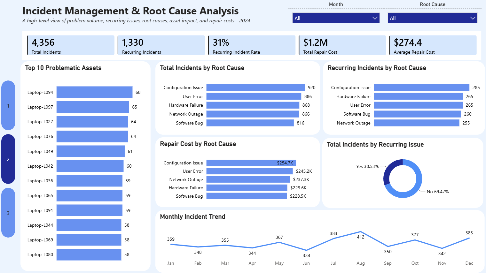

Service Desk Operational Analytics
Turning Service Desk data into operational insights to improve SLA performance, identify recurring problems, control costs, and strengthen customer experience.
Project Overview
This analysis used ticket-level data to examine SLA performance, resolution times, recurring incidents and customer satisfaction, with the aim of identifying operational patterns and areas for improvement.
Analytical Approach
I prepared and analysed the dataset to explore team performance, service workload, agent performance and SLA compliance.
The analysis focused on both the volume of issues being handled and the underlying causes that may lead to repeated service disruptions.
Key Analysis
- Analysed total incidents and requests
- Examined assets and recurring incidents
- Analysed operational performance (Resolution Time/SLA Target)
- Analysed customer experience (CSAT)
Dashboard
The visualisations below present the key findings from the analysis.
Service Desk Operational Dashboard
This Power BI dashboard provides a view of service desk performance, covering ticket volumes, SLA compliance, resolution times, agent performance and customer satisfaction.

Incident Management & Root Cause Analysis Dashboard
Incident records were distributed relatively evenly across the five identified root causes, but
configuration Issues ranked highest, with 920 incidents.They also generated the highest repair
cost at approximately $254.7K.
The 31% recurring incident rate indicates that a significant portion of the problem workload may
require preventive action rather than repeated resolution.

Service Desk Operational Excellence Dashboard
Operational performance focuses on how effectively the service desk handles incoming tickets.
The key performance measure is the Service Level Agreement (SLA), which establishes the
expected service standard for resolving a ticket.
The analysis shows that although tickets were
resolved in an average of 3.3 hours, only 70% met their applicable SLA target.
This distinction is important because average resolution time and SLA compliance measure
different things. A low average resolution time does not necessarily mean that every ticket was
resolved within its individual SLA.
Customer satisfaction provides a second perspective on service performance. The average score of
3.0/5 remained relatively stable throughout 2024, ranging from approximately 2.9 to 3.1 across
the months.
This suggests that customer experience was relatively consistent, but the overall score leaves room
for improvement. Future analysis could examine whether satisfaction is associated with resolution
time, SLA breaches, agent performance, or specific ticket characteristics.

Key Insights
In 2024, the Service Desk handled 10,000 tickets, comprising 5,644 service requests and 4,356 incidents.
While the average resolution time was 3.3 hours, overall SLA compliance was 70%, meaning approximately three in ten tickets did not meet their applicable service-level target.
Recurring problems accounted for 31% of recorded incidents, while average customer satisfaction was 3.0 out of 5. These findings highlighted three key areas for analysis: reducing recurring problems, identifying high-impact root causes, and improving SLA performance while maintaining a positive customer experience.
Management Recommendations
- Reduce Recurring Problems: 31% of problems reoccur. Target a 20% reduction in recurring problems through focused root-cause interventions.
- Prioritise Configuration Issues: 920 problems and $254.7K spent in repairs. Target a 15% reduction through standardised configurations and preventive controls.
- Improve SLA Compliance: 29.7% of tickets breached SLA. Raise compliance from 70% to 85%+ through workload balancing and escalation controls.
- Reduce Repair Costs: $1.2M in total repair costs. Target a 10% reduction, prioritising the highest-cost causes and assets.
- Improve Customer Satisfaction: Average satisfaction is 3.0/5. Target 4.5/5 by addressing low-rated tickets and their relationship with resolution performance.
- Intervene on High-Problem Assets: The highest-impact asset recorded 68 problems. Review the Top 10 assets and determine whether to repair, reconfigure, maintain, or replace.
Tools Used
Power BI | Power Query | DAX
Skills
Data cleaning, Data modelling, DAX, KPI development, Data visualisation, Dashboard Design and Business Insight Generation.
Project Outcome
The analysis provided a data-driven view of service desk performance and highlighted key operational priorities for management.
The findings identified SLA compliance, recurring incidents, high-impact assets, repair costs and customer satisfaction as interconnected areas requiring attention.
In particular, the 31% level of recurring incidents and 70% SLA compliance indicated opportunities to address underlying problems rather than focusing solely on resolving individual tickets.
The reports presented in this project enabled management to move from simply monitoring ticket volumes to identifying where service issues were recurring, which assets and problem areas were generating greater operational impact, and where targeted interventions could improve performance.
The recommended actions included reducing recurring problems through root-cause analysis, improving SLA performance through workload balancing and escalation controls, prioritising high-cost configuration issues, reviewing high-problem assets, and addressing factors contributing to lower customer satisfaction.
Overall, the project demonstrates how service desk data can be transformed into actionable operational intelligence to support performance improvement, cost control, proactive problem management and a better customer experience.